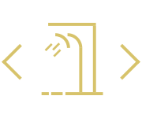

Douchecabine of douchewand voor een droge vloer
Met een douchewand of badwand voorkom je dat je badkamervloer helemaal nat is na je verkwikkende douche- of badritueel. Je kunt bijvoorbeeld kiezen voor strakke, losse wanden waarmee je een riante inloopdouche creëert. Of heb je liever een douchecabine? Deze heb je tegenwoordig in heerlijk ruime varianten en met luxe accessoires. Er zijn verschillende oplossingen om je badkamervloer droog te houden:
Douchecabine
In diverse afmetingen en vormen verkrijgbaar. Een douchecabine houdt niet alleen al het water binnen, maar ook de meeste warmte.
Inloopdouche
Een douche in een nis tussen twee muren of met een losse douchewand. De open zijde geeft je een gevoel van ruimte. Hoe hoog je wand wordt en welk materiaal je kiest, is helemaal aan jou! Hierdoor past deze optie in elke badkamer.
Badwand
Een (meestal glazen) wand op je badrand die je behoedt voor een kletsnatte vloer. Je kunt kiezen uit diverse typen en stijlen. Populair is een strakke, gladde badrand met zo min mogelijk profiel.
Douche- en badwand in één
Hiermee maak je eenvoudig een douchecabine in je bad. Een prima oplossing wanneer je graag doucht én baddert en geen ruimte hebt voor een losse douche.

Soorten, maten en stijlen
Douche- en badwanden zijn er van borst- tot plafondhoogte. Daarnaast heb je de keuze uit diverse materialen: transparant glas, kunststof, matglas of transparant glas met een werkje erin. Ga je voor schoonmaakgemak en zo neutraal mogelijk, dan neem je transparant glas. Getint glas kan ook. Douchecabines zijn er in allerlei maten en vormen: half rond, rond, vierkant en rechthoekig. Je kunt kiezen voor strak of juist gedecoreerd met matglas of een patroon op de ruitjes. Zeer bepalend bij je keuze is de beschikbare ruimte in je badkamer. Heb je een kleine badkamer en wil je voor de kinderen een bad en voor jezelf een douche? Een douche en een bad in één creëer je met een badwand of douche en bad in één. Een douchecabine is er voor elk formaat badkamer. Toch liever een inloopdouche? Kies dan de best passende variant. Een inloopdouche in een nis maakt een ruimte optisch kleiner. Een transparante douchewand houdt de ruimte open en licht maar biedt minder privacy.
Douchewand gecombineerd met douchevloer
Steeds meer mensen die voor een inloopdouche kiezen combineren een douchewand met een douchevloer in plaats van tegels. Dit heeft te maken met het onderhoudsgemak: doordat een douchevloer geen voegen heeft, is deze makkelijk schoon te houden. Douchevloeren zijn verkrijgbaar in allerlei kleuren, dus je vindt er zeker een die bij jouw tegels past. Soorten, maten en stijlen.
" Een douche en bad in één, handig en wat een luxe!
De douchevloer
Ook bij de vloer van een douche zijn er een aantal opties. Door de tegels van de badkamer door te laten lopen in je inloopdouche oogt de badkamer ruimtelijker en trek je de stijl van de badkamer door naar de douche. Dit is mooi, bijvoorbeeld als je een kleine badkamer hebt. Toch is een aparte douchevloer uit één materiaal ook steeds gewilder geworden. Deze vloeren hebben geen voegen en zijn daardoor makkelijker schoon te houden. Bovendien zijn douchevloeren beschikbaar in allerlei kleuren zodat er altijd een vloer is die past bij jouw badkamer.
Heeft u vragen over onze diensten of behoefte aan vakkundig advies? Heeft u (ver-)bouwplannen of bent u toe aan een nieuwe badkamer of toilet? Graag uitnodigen wij u uit om contact met ons op te nemen.
Wij hebben al vele mooie “droom” badkamers mogen realiseren over geheel Nederland, o.a. Regio Utrecht, Zuid-Holland, etc. Wij helpen u natuurlijk graag! Neem vrijblijvend telefonisch contact met ons op 0851302688 of stuur ons een e-mail bericht info@badinstallaties.nl